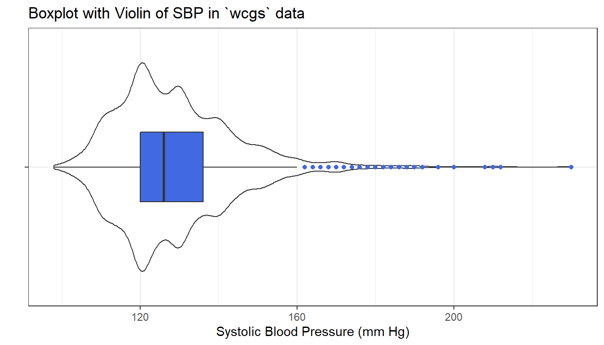
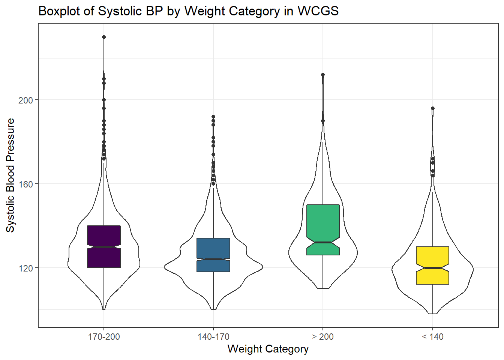

knitr::opts_chunk$set(comment = NA)
library(knitr)
library(janitor)
library(broom)
library(patchwork)
library(tidyverse)
theme_set(theme_bw())16 The WCGS
16.1 Setup: Packages Used Here
We will also use the geom_density_ridges function from the ggridges package, and the favstats function from the mosaic package, and the ggpairs function from the GGally package.
16.2 The Western Collaborative Group Study (wcgs) data set
Vittinghoff et al. (2012) explore data from the Western Collaborative Group Study (WCGS) in great detail1. We’ll touch lightly on some key issues in this Chapter.
The Western Collaborative Group Study (WCGS) was designed to test the hypothesis that the so-called Type A behavior pattern (TABP) - “characterized particularly by excessive drive, aggressiveness, and ambition, frequently in association with a relatively greater preoccupation with competitive activity, vocational deadlines, and similar pressures” - is a cause of coronary heart disease (CHD). Two additional goals, developed later in the study, were (1) to investigate the comparability of formulas developed in WCGS and in the Framingham Study (FS) for prediction of CHD risk, and (2) to determine how addition of TABP to an existing multivariate prediction formula affects ability to select subjects for intervention programs.
The study enrolled over 3,000 men ages 39-59 who were employed in San Francisco or Los Angeles, during 1960 and 1961.
wcgs <- read_csv("data/wcgs.csv") |>
mutate(across(where(is.character), as_factor))
wcgs# A tibble: 3,154 × 22
id age agec height weight lnwght wghtcat bmi sbp lnsbp dbp chol
<dbl> <dbl> <fct> <dbl> <dbl> <dbl> <fct> <dbl> <dbl> <dbl> <dbl> <dbl>
1 2343 50 46-50 67 200 5.30 170-200 31.3 132 4.88 90 249
2 3656 51 51-55 73 192 5.26 170-200 25.3 120 4.79 74 194
3 3526 59 56-60 70 200 5.30 170-200 28.7 158 5.06 94 258
4 22057 51 51-55 69 150 5.01 140-170 22.1 126 4.84 80 173
5 12927 44 41-45 71 160 5.08 140-170 22.3 126 4.84 80 214
6 16029 47 46-50 64 158 5.06 140-170 27.1 116 4.75 76 206
7 3894 40 35-40 70 162 5.09 140-170 23.2 122 4.80 78 190
8 11389 41 41-45 70 160 5.08 140-170 23.0 130 4.87 84 212
9 12681 50 46-50 71 195 5.27 170-200 27.2 112 4.72 70 130
10 10005 43 41-45 68 187 5.23 170-200 28.4 120 4.79 80 233
# … with 3,144 more rows, and 10 more variables: behpat <fct>, dibpat <fct>,
# smoke <fct>, ncigs <dbl>, arcus <dbl>, chd69 <fct>, typchd69 <dbl>,
# time169 <dbl>, t1 <dbl>, uni <dbl>
# ℹ Use `print(n = ...)` to see more rows, and `colnames()` to see all variable namesHere, we have 3154 rows (subjects) and 22 columns (variables). After importing the data and creating a tibble with read_csv, I used mutate(across(where(is.character), as_factor) to convert all variables containing character data into factors.
16.2.1 Structure of wcgs
We can specify the (sometimes terrible) variable names, through the names function, or we can add other elements of the structure, so that we can identify elements of particular interest.
str(wcgs)tibble [3,154 × 22] (S3: tbl_df/tbl/data.frame)
$ id : num [1:3154] 2343 3656 3526 22057 12927 ...
$ age : num [1:3154] 50 51 59 51 44 47 40 41 50 43 ...
$ agec : Factor w/ 5 levels "46-50","51-55",..: 1 2 3 2 4 1 5 4 1 4 ...
$ height : num [1:3154] 67 73 70 69 71 64 70 70 71 68 ...
$ weight : num [1:3154] 200 192 200 150 160 158 162 160 195 187 ...
$ lnwght : num [1:3154] 5.3 5.26 5.3 5.01 5.08 ...
$ wghtcat : Factor w/ 4 levels "170-200","140-170",..: 1 1 1 2 2 2 2 2 1 1 ...
$ bmi : num [1:3154] 31.3 25.3 28.7 22.1 22.3 ...
$ sbp : num [1:3154] 132 120 158 126 126 116 122 130 112 120 ...
$ lnsbp : num [1:3154] 4.88 4.79 5.06 4.84 4.84 ...
$ dbp : num [1:3154] 90 74 94 80 80 76 78 84 70 80 ...
$ chol : num [1:3154] 249 194 258 173 214 206 190 212 130 233 ...
$ behpat : Factor w/ 4 levels "A1","A2","B3",..: 1 1 1 1 1 1 1 1 1 1 ...
$ dibpat : Factor w/ 2 levels "Type A","Type B": 1 1 1 1 1 1 1 1 1 1 ...
$ smoke : Factor w/ 2 levels "Yes","No": 1 1 2 2 2 1 2 1 2 1 ...
$ ncigs : num [1:3154] 25 25 0 0 0 80 0 25 0 25 ...
$ arcus : num [1:3154] 1 0 1 1 0 0 0 0 1 0 ...
$ chd69 : Factor w/ 2 levels "No","Yes": 1 1 1 1 1 1 1 1 1 1 ...
$ typchd69: num [1:3154] 0 0 0 0 0 0 0 0 0 0 ...
$ time169 : num [1:3154] 1367 2991 2960 3069 3081 ...
$ t1 : num [1:3154] -1.63 -4.06 0.64 1.12 2.43 ...
$ uni : num [1:3154] 0.486 0.186 0.728 0.624 0.379 ...16.2.2 Codebook for wcgs
This table was lovingly hand-crafted, and involved a lot of typing. We’ll look for better ways in 432.
| Name | Stored As | Type | Details (units, levels, etc.) |
|---|---|---|---|
id |
integer | (nominal) | ID #, nominal and uninteresting |
age |
integer | quantitative | age, in years - no decimal places |
agec |
factor (5) | (ordinal) | age: 35-40, 41-45, 46-50, 51-55, 56-60 |
height |
integer | quantitative | height, in inches |
weight |
integer | quantitative | weight, in pounds |
lnwght |
number | quantitative | natural logarithm of weight |
wghtcat |
factor (4) | (ordinal) | wt: < 140, 140-170, 170-200, > 200 |
bmi |
number | quantitative | body-mass index: |
| 703 * weight in lb / (height in in)2 | |||
sbp |
integer | quantitative | systolic blood pressure, in mm Hg |
lnsbp |
number | quantitative | natural logarithm of sbp |
dbp |
integer | quantitative | diastolic blood pressure, mm Hg |
chol |
integer | quantitative | total cholesterol, mg/dL |
behpat |
factor (4) | (nominal) | behavioral pattern: A1, A2, B3 or B4 |
dibpat |
factor (2) | (binary) | behavioral pattern: A or B |
smoke |
factor (2) | (binary) | cigarette smoker: Yes or No |
ncigs |
integer | quantitative | number of cigarettes smoked per day |
arcus |
integer | (nominal) | arcus senilis present (1) or absent (0) |
chd69 |
factor (2) | (binary) | CHD event: Yes or No |
typchd69 |
integer | (4 levels) | event: 0 = no CHD, 1 = MI or SD, |
| 2 = silent MI, 3 = angina | |||
time169 |
integer | quantitative | follow-up time in days |
t1 |
number | quantitative | heavy-tailed (random draws) |
uni |
number | quantitative | light-tailed (random draws) |
16.2.3 Quick Summary
summary(wcgs) id age agec height weight
Min. : 2001 Min. :39.00 46-50: 750 Min. :60.00 Min. : 78
1st Qu.: 3741 1st Qu.:42.00 51-55: 528 1st Qu.:68.00 1st Qu.:155
Median :11406 Median :45.00 56-60: 242 Median :70.00 Median :170
Mean :10478 Mean :46.28 41-45:1091 Mean :69.78 Mean :170
3rd Qu.:13115 3rd Qu.:50.00 35-40: 543 3rd Qu.:72.00 3rd Qu.:182
Max. :22101 Max. :59.00 Max. :78.00 Max. :320
lnwght wghtcat bmi sbp lnsbp
Min. :4.357 170-200:1171 Min. :11.19 Min. : 98.0 Min. :4.585
1st Qu.:5.043 140-170:1538 1st Qu.:22.96 1st Qu.:120.0 1st Qu.:4.787
Median :5.136 > 200 : 213 Median :24.39 Median :126.0 Median :4.836
Mean :5.128 < 140 : 232 Mean :24.52 Mean :128.6 Mean :4.850
3rd Qu.:5.204 3rd Qu.:25.84 3rd Qu.:136.0 3rd Qu.:4.913
Max. :5.768 Max. :38.95 Max. :230.0 Max. :5.438
dbp chol behpat dibpat smoke
Min. : 58.00 Min. :103.0 A1: 264 Type A:1589 Yes:1502
1st Qu.: 76.00 1st Qu.:197.2 A2:1325 Type B:1565 No :1652
Median : 80.00 Median :223.0 B3:1216
Mean : 82.02 Mean :226.4 B4: 349
3rd Qu.: 86.00 3rd Qu.:253.0
Max. :150.00 Max. :645.0
NA's :12
ncigs arcus chd69 typchd69 time169
Min. : 0.0 Min. :0.0000 No :2897 Min. :0.0000 Min. : 18
1st Qu.: 0.0 1st Qu.:0.0000 Yes: 257 1st Qu.:0.0000 1st Qu.:2842
Median : 0.0 Median :0.0000 Median :0.0000 Median :2942
Mean :11.6 Mean :0.2985 Mean :0.1363 Mean :2684
3rd Qu.:20.0 3rd Qu.:1.0000 3rd Qu.:0.0000 3rd Qu.:3037
Max. :99.0 Max. :1.0000 Max. :3.0000 Max. :3430
NA's :2
t1 uni
Min. :-47.43147 Min. :0.0007097
1st Qu.: -1.00337 1st Qu.:0.2573755
Median : 0.00748 Median :0.5157779
Mean : -0.03336 Mean :0.5052159
3rd Qu.: 0.97575 3rd Qu.:0.7559902
Max. : 47.01623 Max. :0.9994496
NA's :39 For a more detailed description, we might consider Hmisc::describe, psych::describe, mosaic::favstats, etc.
16.3 Are the SBPs Normally Distributed?
Consider the question of whether the distribution of the systolic blood pressure results is well-approximated by the Normal.
res <- mosaic::favstats(~ sbp, data = wcgs)Registered S3 method overwritten by 'mosaic':
method from
fortify.SpatialPolygonsDataFrame ggplot2bin_w <- 5 # specify binwidth
ggplot(wcgs, aes(x = sbp)) +
geom_histogram(binwidth = bin_w,
fill = "orchid",
col = "blue") +
stat_function(
fun = function(x) dnorm(x, mean = res$mean,
sd = res$sd) *
res$n * bin_w,
col = "navy") +
labs(title = "Systolic BP for `wcgs` subjects",
x = "Systolic BP (mm Hg)", y = "",
caption = "Superimposed Normal model")
Since the data contain both sbp and lnsbp (its natural logarithm), let’s compare them. Note that in preparing the graph, we’ll need to change the location for the text annotation.
res <- mosaic::favstats(~ lnsbp, data = wcgs)
bin_w <- 0.05 # specify binwidth
ggplot(wcgs, aes(x = lnsbp)) +
geom_histogram(binwidth = bin_w,
fill = "orange",
col = "blue") +
stat_function(
fun = function(x) dnorm(x, mean = res$mean,
sd = res$sd) *
res$n * bin_w,
col = "navy") +
labs(title = "ln(Systolic BP) for `wcgs` subjects",
x = "ln(Systolic BP)", y = "",
caption = "Superimposed Normal model")
We can also look at Normal Q-Q plots, for instance…
p1 <- ggplot(wcgs, aes(sample = sbp)) +
geom_qq(color = "orchid") +
geom_qq_line(color = "red") +
labs(y = "Ordered SBP", title = "sbp in wcgs")
p2 <- ggplot(wcgs, aes(sample = lnsbp)) +
geom_qq(color = "orange") +
geom_qq_line(color = "red") +
labs(y = "Ordered ln(SBP)", title = "ln(sbp) in wcgs")
## next step requires library(patchwork)
p1 + p2 +
plot_annotation(title = "Normal Q-Q plots of SBP and ln(SBP) in wcgs")
There’s at best a small improvement from sbp to lnsbp in terms of approximation by a Normal distribution.
16.4 Identifying and Describing SBP outliers
It looks like there’s an outlier (or a series of them) in the SBP data.
ggplot(wcgs, aes(x = "", y = sbp)) +
geom_violin() +
geom_boxplot(width = 0.3, fill = "royalblue",
outlier.color = "royalblue") +
labs(title = "Boxplot with Violin of SBP in `wcgs` data",
y = "Systolic Blood Pressure (mm Hg)",
x = "") +
coord_flip() 
Hmisc::describe(wcgs$sbp)wcgs$sbp
n missing distinct Info Mean Gmd .05 .10
3154 0 62 0.996 128.6 16.25 110 112
.25 .50 .75 .90 .95
120 126 136 148 156
lowest : 98 100 102 104 106, highest: 200 208 210 212 230The maximum value here is 230, and is clearly the most extreme value in the data set. One way to gauge this is to describe that observation’s Z score, the number of standard deviations away from the mean that the observation falls. Here, the maximum value, 230 is 6.71 standard deviations above the mean, and thus has a Z score of 6.7.
A negative Z score would indicate a point below the mean, while a positive Z score indicates, as we’ve seen, a point above the mean. The minimum systolic blood pressure, 98 is 2.03 standard deviations below the mean, so it has a Z score of -2.
Recall that the Empirical Rule suggests that if a variable follows a Normal distribution, it would have approximately 95% of its observations falling inside a Z score of (-2, 2), and 99.74% falling inside a Z score range of (-3, 3). Do the systolic blood pressures appear Normally distributed?
16.5 Does Weight Category Relate to SBP?
The data are collected into four groups based on the subject’s weight (in pounds).
ggplot(wcgs, aes(x = wghtcat, y = sbp)) +
geom_violin() +
geom_boxplot(aes(fill = wghtcat), width = 0.3, notch = TRUE) +
scale_fill_viridis_d() +
guides(fill = "none") +
labs(title = "Boxplot of Systolic BP by Weight Category in WCGS",
x = "Weight Category", y = "Systolic Blood Pressure")
16.6 Re-Leveling a Factor
Well, that’s not so good. We really want those weight categories (the levels) to be ordered more sensibly.
wcgs |> tabyl(wghtcat) wghtcat n percent
170-200 1171 0.37127457
140-170 1538 0.48763475
> 200 213 0.06753329
< 140 232 0.07355739Like all factor variables in R, the categories are specified as levels. We want to change the order of the levels in a new version of this factor variable so they make sense. There are multiple ways to do this, but I prefer the fct_relevel function from the forcats package (part of the tidyverse.) Which order is more appropriate?
I’ll add a new variable to the wcgs data called weight_f that relevels the wghtcat data.
wcgs <- wcgs |>
mutate(weight_f = fct_relevel(wghtcat, "< 140", "140-170", "170-200", "> 200"))
wcgs |> tabyl(weight_f) weight_f n percent
< 140 232 0.07355739
140-170 1538 0.48763475
170-200 1171 0.37127457
> 200 213 0.06753329For more on the forcats package, check out Wickham and Grolemund (2022), especially the Section on Factors.
16.6.1 SBP by Weight Category
ggplot(wcgs, aes(x = weight_f, y = sbp, fill = weight_f)) +
geom_boxplot(notch = TRUE) +
scale_fill_viridis_d() +
guides(fill = "none") +
labs(title = "Systolic Blood Pressure by Reordered Weight Category in WCGS",
x = "Weight Category", y = "Systolic Blood Pressure")
We might see some details well with a ridgeline plot, too.
ggplot(wcgs, aes(x = sbp, y = weight_f, fill = weight_f, height = ..density..)) +
ggridges::geom_density_ridges(scale = 2) +
scale_fill_viridis_d() +
guides(fill = "none") +
labs(title = "SBP by Weight Category (wcgs)",
x = "Systolic Blood Pressure",
y = "Weight Category") Picking joint bandwidth of 3.74
As the plots suggest, patients in the heavier groups generally had higher systolic blood pressures.
mosaic::favstats(sbp ~ weight_f, data = wcgs) weight_f min Q1 median Q3 max mean sd n missing
1 < 140 98 112 120 130 196 123.1379 14.73394 232 0
2 140-170 100 118 124 134 192 126.2939 13.65294 1538 0
3 170-200 100 120 130 140 230 131.1136 15.57024 1171 0
4 > 200 110 126 132 150 212 137.8685 16.75522 213 016.7 Are Weight and SBP Linked?
Let’s build a scatter plot of SBP (Outcome) by Weight (Predictor), rather than breaking down into categories.
ggplot(wcgs, aes(x = weight, y = sbp)) +
geom_point(size=3, shape=1, color="forestgreen") + ## default size = 2
stat_smooth(method=lm, color="red") + ## add se=FALSE to hide conf. interval
stat_smooth(method=loess, se=FALSE, color="blue") +
ggtitle("SBP vs. Weight in 3,154 WCGS Subjects") 
- The mass of the data is hidden from us - showing 3154 points in one plot can produce little more than a blur where there are lots of points on top of each other.
- Here the least squares regression line (in red), and loess scatterplot smoother, (in blue) can help.
The relationship between systolic blood pressure and weight appears to be very close to linear, but of course there is considerable scatter around that generally linear relationship. It turns out that the Pearson correlation of these two variables is 0.253.
16.8 SBP and Weight by Arcus Senilis groups?
An issue of interest to us will be to assess whether the SBP-Weight relationship we see above is similar among subjects who have arcus senilis and those who do not.
Arcus senilis is an old age syndrome where there is a white, grey, or blue opaque ring in the corneal margin (peripheral corneal opacity), or white ring in front of the periphery of the iris. It is present at birth but then fades; however, it is quite commonly present in the elderly. It can also appear earlier in life as a result of hypercholesterolemia.
Wikipedia article on Arcus Senilis, retrieved 2017-08-15
Let’s start with a quick look at the arcus data.
wcgs |> tabyl(arcus) arcus n percent valid_percent
0 2211 0.7010145847 0.7014594
1 941 0.2983512999 0.2985406
NA 2 0.0006341154 NAWe have 2 missing values, so we probably want to do something about that before plotting the data, and we may also want to create a factor variable with more meaningful labels than 1 (which means yes, arcus senilis is present) and 0 (which means no, it isn’t.)
wcgs <- wcgs |>
mutate(arcus_f = fct_recode(factor(arcus),
"Arcus senilis" = "1",
"No arcus senilis" = "0"),
arcus_f = fct_relevel(arcus_f, "Arcus senilis"))
wcgs |> tabyl(arcus_f, arcus) arcus_f 0 1 NA_
Arcus senilis 0 941 0
No arcus senilis 2211 0 0
<NA> 0 0 2Let’s build a version of the wcgs data that eliminates all missing data in the variables of immediate interest, and then plot the SBP-weight relationship in groups of patients with and without arcus senilis.
wcgs |>
filter(complete.cases(arcus_f, sbp, weight)) |>
ggplot(aes(x = weight, y = sbp, group = arcus_f)) +
geom_point(shape = 1) +
stat_smooth(method=lm, color="red") +
stat_smooth(method=loess, se=FALSE, color="blue") +
labs(title = "SBP vs. Weight by Arcus Senilis status",
caption = "3,152 Western Collaborative Group Study subjects with known arcus senilis status") +
facet_wrap(~ arcus_f) 
16.9 Linear Model for SBP-Weight Relationship: subjects without Arcus Senilis
model.noarcus <-
lm(sbp ~ weight, data = filter(wcgs, arcus == 0))
tidy(model.noarcus) |> kable(digits = 2)| term | estimate | std.error | statistic | p.value |
|---|---|---|---|---|
| (Intercept) | 95.92 | 2.56 | 37.54 | 0 |
| weight | 0.19 | 0.01 | 12.77 | 0 |
glance(model.noarcus) |> select(r.squared:p.value, AIC) |> kable(digits = 3)| r.squared | adj.r.squared | sigma | statistic | p.value | AIC |
|---|---|---|---|---|---|
| 0.069 | 0.068 | 14.799 | 162.959 | 0 | 18193.78 |
summary(model.noarcus)
Call:
lm(formula = sbp ~ weight, data = filter(wcgs, arcus == 0))
Residuals:
Min 1Q Median 3Q Max
-29.011 -10.251 -2.447 7.553 99.848
Coefficients:
Estimate Std. Error t value Pr(>|t|)
(Intercept) 95.9219 2.5552 37.54 <2e-16 ***
weight 0.1902 0.0149 12.77 <2e-16 ***
---
Signif. codes: 0 '***' 0.001 '**' 0.01 '*' 0.05 '.' 0.1 ' ' 1
Residual standard error: 14.8 on 2209 degrees of freedom
Multiple R-squared: 0.0687, Adjusted R-squared: 0.06828
F-statistic: 163 on 1 and 2209 DF, p-value: < 2.2e-16The linear model for the 2211 patients without Arcus Senilis has R-squared = 6.87%.
- The regression equation is 95.92 - 0.19 weight, for those patients without Arcus Senilis.
16.10 Linear Model for SBP-Weight Relationship: subjects with Arcus Senilis
model.witharcus <-
lm(sbp ~ weight, data = filter(wcgs, arcus == 1))
tidy(model.witharcus) |> kable(digits = 2)| term | estimate | std.error | statistic | p.value |
|---|---|---|---|---|
| (Intercept) | 101.88 | 3.76 | 27.13 | 0 |
| weight | 0.16 | 0.02 | 7.39 | 0 |
glance(model.witharcus) |> select(r.squared:p.value, AIC) |> kable(digits = 3)| r.squared | adj.r.squared | sigma | statistic | p.value | AIC |
|---|---|---|---|---|---|
| 0.055 | 0.054 | 14.192 | 54.583 | 0 | 7666.828 |
summary(model.witharcus)
Call:
lm(formula = sbp ~ weight, data = filter(wcgs, arcus == 1))
Residuals:
Min 1Q Median 3Q Max
-30.335 -9.636 -1.961 7.973 76.738
Coefficients:
Estimate Std. Error t value Pr(>|t|)
(Intercept) 101.87847 3.75572 27.126 < 2e-16 ***
weight 0.16261 0.02201 7.388 3.29e-13 ***
---
Signif. codes: 0 '***' 0.001 '**' 0.01 '*' 0.05 '.' 0.1 ' ' 1
Residual standard error: 14.19 on 939 degrees of freedom
Multiple R-squared: 0.05494, Adjusted R-squared: 0.05393
F-statistic: 54.58 on 1 and 939 DF, p-value: 3.29e-13The linear model for the 941 patients with Arcus Senilis has R-squared = 5.49%.
- The regression equation is 101.88 - 0.163 weight, for those patients with Arcus Senilis.
16.11 Including Arcus Status in the model
model3 <- lm(sbp ~ weight * arcus, data = filter(wcgs, !is.na(arcus)))
tidy(model3) |> kable(digits = 2)| term | estimate | std.error | statistic | p.value |
|---|---|---|---|---|
| (Intercept) | 95.92 | 2.52 | 38.00 | 0.00 |
| weight | 0.19 | 0.01 | 12.92 | 0.00 |
| arcus | 5.96 | 4.62 | 1.29 | 0.20 |
| weight:arcus | -0.03 | 0.03 | -1.02 | 0.31 |
glance(model3) |> select(r.squared:p.value, AIC) |> kable(digits = 3)| r.squared | adj.r.squared | sigma | statistic | p.value | AIC |
|---|---|---|---|---|---|
| 0.066 | 0.065 | 14.62 | 74.094 | 0 | 25860.96 |
summary(model3)
Call:
lm(formula = sbp ~ weight * arcus, data = filter(wcgs, !is.na(arcus)))
Residuals:
Min 1Q Median 3Q Max
-30.335 -10.152 -2.349 7.669 99.848
Coefficients:
Estimate Std. Error t value Pr(>|t|)
(Intercept) 95.92190 2.52440 37.998 <2e-16 ***
weight 0.19017 0.01472 12.921 <2e-16 ***
arcus 5.95657 4.61972 1.289 0.197
weight:arcus -0.02756 0.02703 -1.019 0.308
---
Signif. codes: 0 '***' 0.001 '**' 0.01 '*' 0.05 '.' 0.1 ' ' 1
Residual standard error: 14.62 on 3148 degrees of freedom
Multiple R-squared: 0.06595, Adjusted R-squared: 0.06506
F-statistic: 74.09 on 3 and 3148 DF, p-value: < 2.2e-16The actual regression equation in this setting includes both weight, and an indicator variable (1 = yes, 0 = no) for arcus senilis status, and the product term combining weight and that 1/0 indicator. In 432, we’ll spend substantial time and energy discussing these product terms, but we’ll not do much of that in 431.
- Note the use of the product term
weight*arcusin the setup of the model to allow both the slope of weight and the intercept term in the model to change depending on arcus senilis status.- For a patient who has arcus, the regression equation is SBP = 95.92 + 0.19 weight + 5.96 (1) - 0.028 weight (1) = 101.88 + 0.162 weight.
- For a patient without arcus senilis, the regression equation is SBP = 95.92 + 0.19 weight + 5.96 (0) - 0.028 weight (0) = 95.92 + 0.19 weight.
The linear model including the interaction of weight and arcus to predict sbp for the 3152 patients with known Arcus Senilis status has R-squared = 6.6%. Again, we’ll discuss interaction more substantially in 432.
16.12 Predictions from these Linear Models
What is our predicted SBP for a subject weighing 175 pounds?
How does that change if our subject weighs 200 pounds?
Recall that
- Without Arcus Senilis, linear model for SBP = 95.9 + 0.19 x weight
- With Arcus Senilis, linear model for SBP = 101.9 + 0.16 x weight
So the predictions for a 175 pound subject are:
95.9 + 0.19 x 175 = 129 mm Hg without Arcus Senilis, and
101.9 + 0.16 x 175 = 130 mm Hg with Arcus Senilis.
And thus, the predictions for a 200 pound subject are:
95.9 + 0.19 x 200 = 134 mm Hg without Arcus Senilis, and
101.9 + 0.16 x 200 = 134.4 mm Hg with Arcus Senilis.
16.13 Scatterplots with Facets Across a Categorical Variable
We can use facets in ggplot2 to show scatterplots across the levels of a categorical variable, like behpat.
ggplot(wcgs, aes(x = weight, y = sbp, col = behpat)) +
geom_point() +
facet_wrap(~ behpat) +
geom_smooth(method = "lm", se = FALSE,
formula = y ~ x, col = "black") +
guides(color = "none") +
theme(strip.text = element_text(face="bold", size=rel(1.25), color="white"),
strip.background = element_rect(fill="royalblue")) +
labs(title = "Scatterplots of SBP vs. Weight within Behavior Pattern")
16.14 Scatterplot and Correlation Matrices
A scatterplot matrix can be very helpful in understanding relationships between multiple variables simultaneously. There are several ways to build such a thing, including the pairs function…
pairs (~ sbp + age + weight + height, data=wcgs, main="Simple Scatterplot Matrix")
16.14.1 Displaying a Correlation Matrix
wcgs |>
dplyr::select(sbp, age, weight, height) |>
cor() |>
kable(digits = 3)| sbp | age | weight | height | |
|---|---|---|---|---|
| sbp | 1.000 | 0.166 | 0.253 | 0.018 |
| age | 0.166 | 1.000 | -0.034 | -0.095 |
| weight | 0.253 | -0.034 | 1.000 | 0.533 |
| height | 0.018 | -0.095 | 0.533 | 1.000 |
16.14.2 Using the GGally package
The ggplot2 system doesn’t have a built-in scatterplot system. There are some nice add-ins in the world, though. One option I sort of like is in the GGally package, which can produce both correlation matrices and scatterplot matrices.
The ggpairs function provides a density plot on each diagonal, Pearson correlations on the upper right and scatterplots on the lower left of the matrix.
GGally::ggpairs(wcgs |> select(sbp, age, weight, height),
title = "Scatterplot Matrix via ggpairs")
For more on the WCGS, you might look at http://www.epi.umn.edu/cvdepi/study-synopsis/western-collaborative-group-study/↩︎